Ainhoa Reyes Moreno
GESTIONS DE PARTICIONS
- Instal·lació ubuntu 20.04
- Selecciona les següents particions a partir de l’àrea lliure del disc:
- Partició primària de 8 GiB muntada a / i amb format ext4.
- Partició primària 2 GiB muntada a /home amb format ext4.
- Partició primària de 4 GiB muntada a /var amb format XFS.

- Un cop instal·lat el sistema, fes login i mira com estan les particions amb el terminal: sudo fdisk -l /dev/sda.

- Quantes particions primàries més pots fer? Demostra-ho a fdisk.
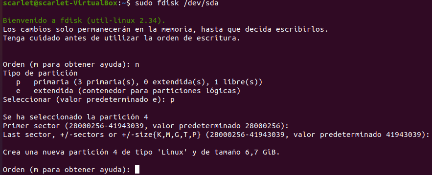
Com ja tinc tres particiones fetes, tan sol puc fer una partició més. En total sería 4 particions primàries com màxim.
- Ara te n’adones que has fet la partició on tens /var molt petita i la vols eixamplar.
Arrenca el programa GParted.
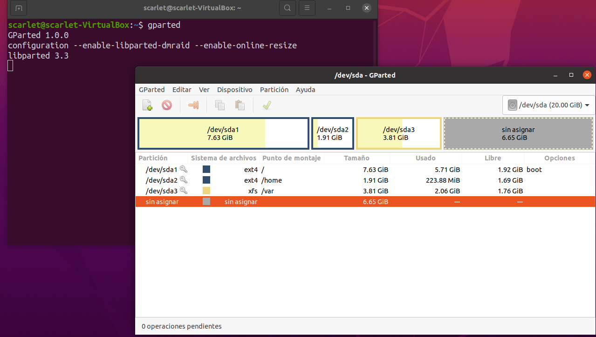
- Eixampla la partició que conté /var i fes que sigui de 8 GiB.


- Accepta els canvis i reinicia en mode normal.
- Torna a mostrar l’estat de les particions amb fdisk.

- Utilitza fdisk i, a l’espai de disc lliure, fes:
- Dues particions noves d’1GiB cadascuna. Quin tipus de particions han de ser? Per què?
Té que ser de partició lògica perquè de primària ja estan utilitzades les quatre.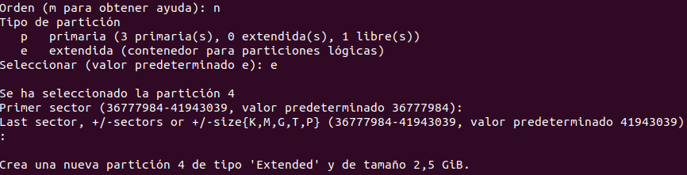

- Esborra la última de les particions anteriors. Quantes particions més de tipus lògic podem crear? Fes la prova creant 6 particions de 100 MiB cadascuna.
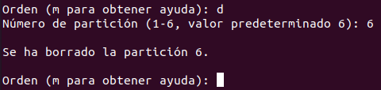
Podem crear particions fins que arribi l’espai màxim.

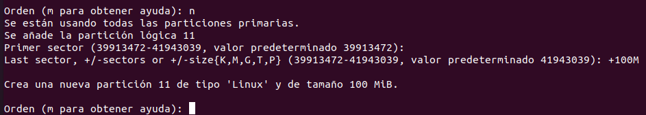
Mostra el resultat (opció p per imprimir).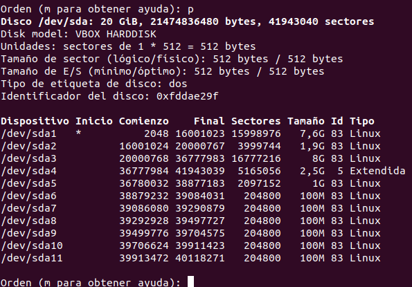
- Dóna format a les anteriors 6 particions amb mkfs: 3 amb ext4, 1 amb nfts, 1 amb vfata (FAT32)


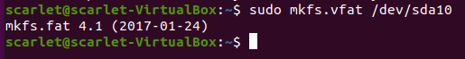
Pots donar format amb XFS des de l’eina mkfs? Instal·la el paquete xfsprogs i torna-ho a provar.
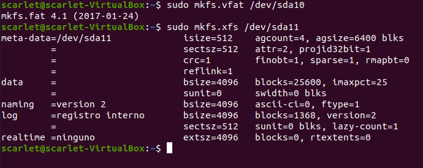
Mostra el resultat final de com queden les particions amb GParted.
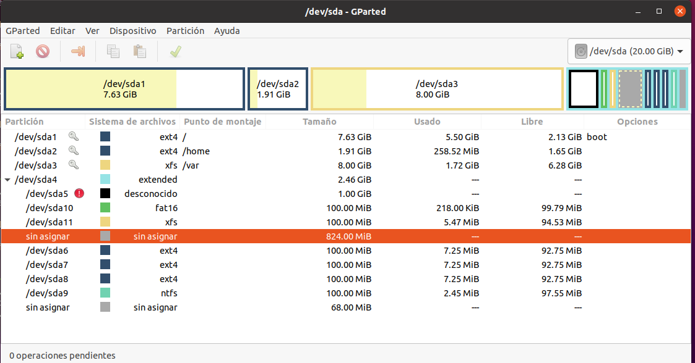
- Apaga la màquina virtual i afegeix un nou disc dur de 10 GiB. Torna a iniciar el sistema.
- Amb el nou disk dur i, fent servint, l’eina gparted, crea 2 particions (1 primària i 1 lògica).

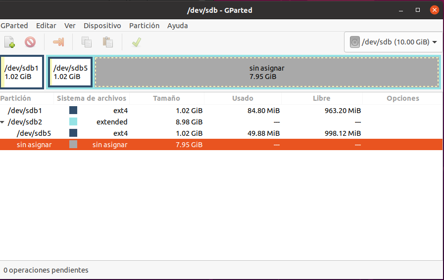
- Reinicia i comprova que apareixen les particions amb les comandes fdisk. Desa el fitxer en alguna de les particions

Desa un fitxer en algunas de les particions.
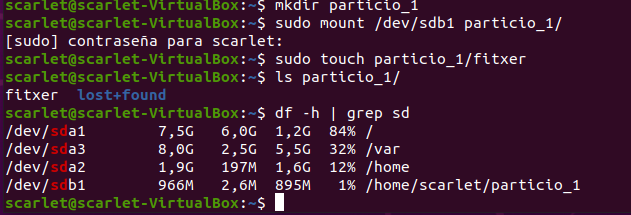
- Ara executa la següent comanda:
sudo dd if=/dev/zero of=/dev/sdb bs=512 count=1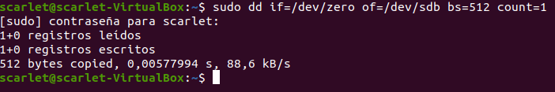
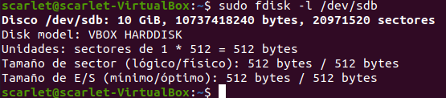
- Amb el mateix disc dur crea ara amb GPT 7 particions consecutives de 1 GiB cadascuna. Dóna-li format a les particions de tipus ext4.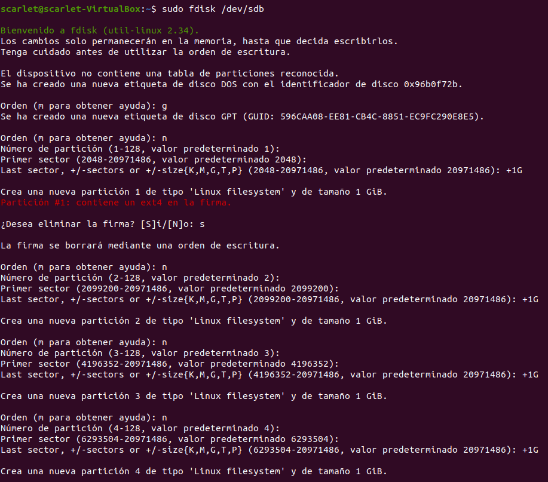


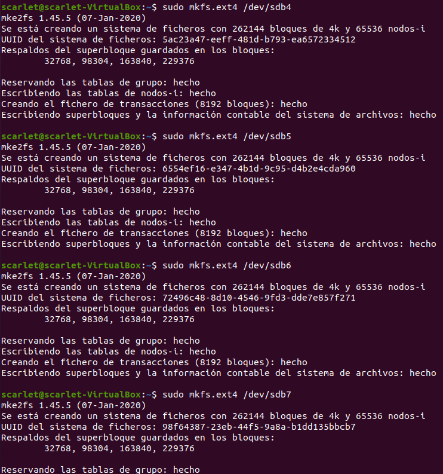
- Verifica que tens les particions creades sense necessitat de cap partició estesa.

- Crea un fitxer en alguna de les particions (crea una carpeta que serveixi de punt de muntatge i utilitza el fitxer de configuració /etc/fstab). Mostra les comandes que has fet servir i la configuració del fitxer.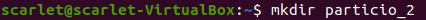


- Ara executa la següent comand:
sudo dd if=/dev/zero of=/dev/sdb bs=512 count=30
Comprova amb fdisk què ha passat amb les particions.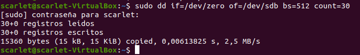
- Entra amb l'eina gdisk i observa què diu sobre l'estat de la taula de particions GPT.

Ens diu que està danyat (Damaged)
Què vol dir l'opció "1- Use current GPT" ? Comprova-ho.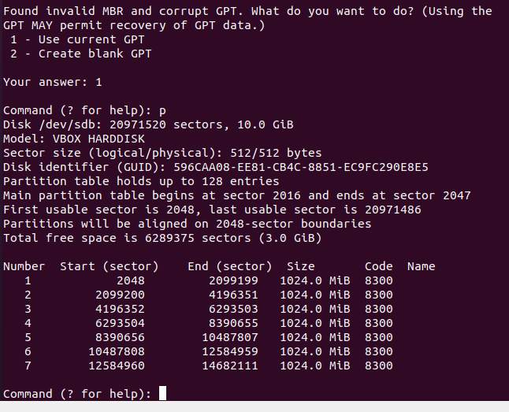
20.- Verifica l'estat de les particions i explica per què has pogut recuperar les particions.

21.- Crea un fitxer a una partició del segon disc.
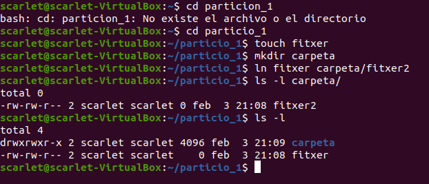
Pots crear un enllaç dur al fitxer en una altra carpeta de la mateixa partició?
I en una carpeta del primer disc al fitxer del segon?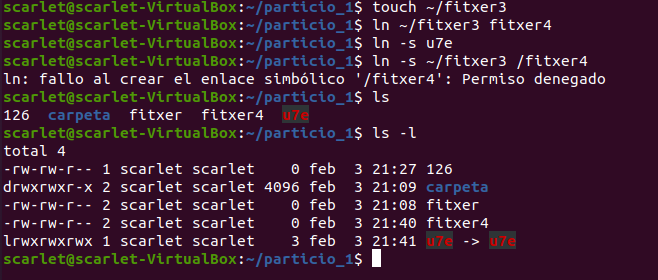